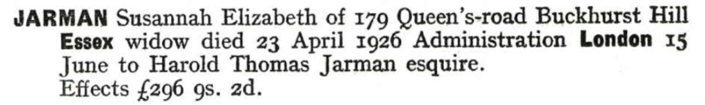

Susannah Elizabeth Jarman (née Cowell) cMar 1860 - 1926
[ Home ] | [ Calendar ] | [ Surnames Index ] | [ Errors ] | [ Family History ]A housemaid and the child of William Cowell (a mariner) and Sarah Pettit, Susannah Cowell, the second cousin three-times-removed on the mother's side of Nigel Horne, was born in St Peters, Thanet, Kent, England c. Mar 18601,2,3, was baptised in Broadstairs, Kent, England on 25 Mar 1860 and married John Jarman (a bookstall manager with whom she had 4 children: Harold Thomas, Percy, Elsie and May) at Christ Church, Ramsgate, Kent, England on 14 Feb 18856.
During her life, she was living at 1 Nelson Place, St Peters, Thanet, Kent on 7 Apr 186110 and on 2 Apr 18717; at Willesborough House, Willesborough, Kent in 18811; at Hambro Road, Streatham, London, England on 5 Apr 18918; at Penwortham Road, Wandsworth, London on 2 Apr 19119 - less than a mile from her second cousin once-removed on her father's side Lilly Clara who was living at 100 Elmbourne Road, Wandsworth, London; at 54 Coldershaw Road, West Ealing, London on 19 Jun 192111; and at 179 Queen's Road, Buckhurst Hill, Essex, England in 1926.
She died on 23 Apr 1926 in Epping, Essex, England3,4,5 and was buried at Hanwell Cemetery, Hanwell, London on 24 Apr 19263.
Parents
- William Castle was born on 10 Feb 1811
- Sarah Ann was born c. 1818
Children
- Harold Thomas was born c. Feb 1886
- Percy was born c. 1887
- Elsie was born in 1893
- May was born in 1899
Citations
- 1881 England, Wales & Scotland Census - Findmypast
- England & Wales births 1837-2006 - Findmypast
- Westminster Burials - Findmypast
- England & Wales Government Probate Death Index 1858-2019 - Findmypast
- England & Wales deaths 1837-2007 - Findmypast
- England & Wales Marriages 1837-2005 - Findmypast
- 1871 England, Wales & Scotland Census - Findmypast (was age 11 and the daughter of the head of the household)
- 1891 England, Wales & Scotland Census - Findmypast (was age 30 and the wife of the head of the household)
- 1911 Census for England & Wales - Findmypast (was age 49 and the wife of the head of the household)
- 1861 England, Wales & Scotland Census - Findmypast (was age 1)
- 1921 Census Of England & Wales - Findmypast (was age 63 and the head of the household)
Media
Susannah Cowell - probate

Thanet Advertiser 21 Feb 1885
1861 UK Census

1871 England, Wales & Scotland Census - GBC/1871/0014311081
England & Wales births 1837-2006 - BMD/B/1860/2/AZ/000244/092
England & Wales marriages 1837-2008 - BMD/M/1885/1/AZ/000049/351
Kent, Canterbury Archdeaconry marriages 1538-1928 - GBPRS/CANT/M/97047475/2
England & Wales deaths 1837-2007 - BMD/D/1926/2/AZ/000473/039
1891 England, Wales & Scotland Census - GBC/1891/0003863550
1911 Census for England & Wales - GBC/1911/RG14/02346/0323/2
Kent, Canterbury Archdeaconry Baptisms - GBPRS-CANT-B-96312343
1861 England, Wales & Scotland Census - GBC-1861-0003552703
England Births & Baptisms 1538-1975 - R_937837143
England Births & Baptisms 1538-1975 - R_884049016
1881 England, Wales & Scotland Census - GBC-1881-0004695718
England & Wales Government Probate Death Index 1858-2019 - GBOR/GOVPROBATE/C/1926-1926/00046491
1921 Census of England & Wales - GBC/1921/RG15/06293/0651/01
Family Tree

Map
Generated by ged2site. Last updated on Jul 3, 2024
Known Issues
Residence record for 1926 contains no citation
Census information missing between Census UK 1891 and Census UK 1911